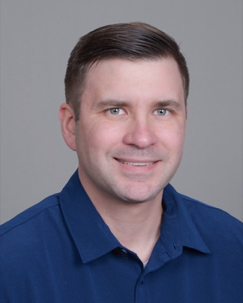

Mikac Technologies LLC was established in 2026 and has not yet completed a federal contract. The firm does not claim past performance it has not earned. What follows is the individual engineering record of the principal, Erik Mikac, offered so that evaluators can judge technical capability accurately.
Principal

Erik Mikac — Owner and Principal Software Engineer. United States Navy veteran; submarine radio operator, 2007–2012. Previously held TS/SCI clearance. Eight years of professional software engineering and technical leadership delivering cloud-native, event-driven platforms in regulated environments, including wholesale energy-market systems and enterprise insurance systems. B.S. in Computer Science, Indiana University Bloomington.
Selected engineering results
Client and employer names are withheld. Figures are as measured in production.
Performance and scalability engineering
- Re-architected an enrollment-validation pipeline using Java virtual threads and container-aware CPU controls, reducing end-to-end processing time from approximately five minutes to twenty seconds while keeping concurrency and resource utilization predictable under Kubernetes.
- Modernized a dashboard's frontend state management to a signal-based architecture, reducing load time from approximately three minutes to thirty seconds.
- Replaced on-demand cross-system security lookups in a certificate-based authorization platform with a synchronized local cache, removing roughly ten seconds of page load latency and eliminating a runtime dependency on an external service.
Modernization and migration
- Containerized and deployed more than a dozen enterprise applications using Docker, Kubernetes, and Helm.
- Replaced legacy ingestion pipelines with Debezium change-data-capture against managed PostgreSQL, enabling scalable and compliant data processing.
- Modernized frontend applications across multiple major generations of Angular.
- Remediated hundreds of critical vulnerabilities across Spring Boot services, strengthening security posture and enterprise compliance.
Platform and data engineering
- Co-designed a high-volume operational data ingestion platform, defining domain models and architectural standards to support long-term scalability and adoption across multiple teams.
- Defined and governed Kafka event contracts and schema evolution rules to maintain compatibility across multiple consuming systems.
- Designed distributed caching solutions using Kubernetes and Hazelcast.
- Built a Kubernetes-native feature flag system enabling safe, controlled rollout of automation and AI-assisted capabilities in production.
Security, compliance, and reliability
- Designed and deployed AWS Lambda services that anonymized millions of sensitive records prior to cloud ingestion, satisfying enterprise security and privacy requirements.
- Improved observability through structured logging, Grafana dashboards, and Splunk analysis, reducing time to resolution for production incidents.
- Implemented REST APIs, enterprise integrations, database solutions, automated testing, and CI/CD pipelines in high-availability environments.
Technical leadership
- Led architecture and technical direction for cloud-native platforms supporting regulated, mission-critical operations.
- Authored and maintained architecture decision records to document tradeoffs and keep design rationale durable across teams.
- Mentored engineers, aligned stakeholders, and coordinated delivery of complex changes to systems already running in production.
How we engage
As a newly formed firm, Mikac Technologies is actively seeking work in three forms.
Subcontracting to established primes
Scoped engineering support on task orders already awarded, where a prime needs specific modernization, integration, or cloud-native capability without adding permanent headcount.
Small prime awards
Fixed-scope work at or below the simplified acquisition threshold, including assessments, prototypes, and discrete modernization tasks with defined deliverables and acceptance criteria.
Commercial engagements
Direct work for commercial clients needing modernization and integration expertise on a project basis.